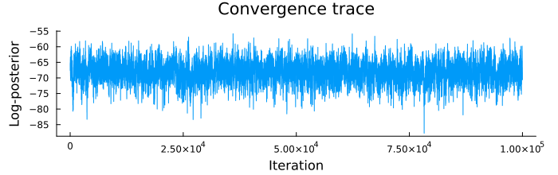
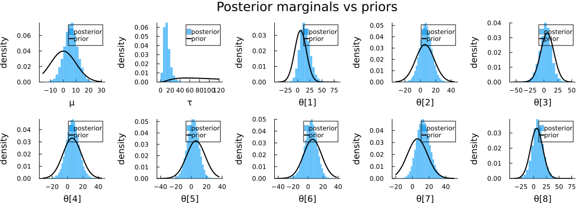

Hierarchical Bayesian Inference: The Eight Schools Problem
The eight schools problem (Rubin, 1981) is a canonical example of hierarchical Bayesian modelling. A test-preparation program was run independently in 8 schools; each school measured a mean score improvement $y_n$ with standard error $\sigma_n$. The effects vary widely and their standard errors are large — so neither pooling all schools nor treating them independently is appropriate.
The hierarchical solution: assume each school's true improvement $\theta_n$ is drawn from a shared population distribution, so information is partially pooled across schools.
\[\theta_n \sim \mathcal{N}(\mu, \tau), \qquad y_n \sim \mathcal{N}(\theta_n, \sigma_n)\]
with priors $\mu \sim \mathcal{N}(0, 10)$ and $\log\tau \sim \mathcal{N}(5, 1)$, following the TensorFlow Probability implementation.
using Random, Statistics, Distributions
using StatsBase, LinearAlgebra
using MonteCarloX
using PlotsCI parameters
In smoke-test mode (CI) we reduce the number of samples to keep the run fast. Full results require n_burn=10_000, n_samples=100_000.
const CI_MODE = get(ENV, "MCX_SMOKE", get(ENV, "MCX_CI", "false")) == "true"
n_burn = CI_MODE ? 200 : 10_000
n_samples = CI_MODE ? 500 : 100_000
thin = CI_MODE ? 1 : 1010Data
y_schools = [28.0, 8.0, -3.0, 7.0, -1.0, 1.0, 18.0, 12.0] ## mean score improvements
σ_schools = [15.0, 10.0, 16.0, 11.0, 9.0, 11.0, 10.0, 18.0] ## standard errors
J = length(y_schools)
println("School effects : ", y_schools)
println("Standard errors : ", σ_schools)School effects : [28.0, 8.0, -3.0, 7.0, -1.0, 1.0, 18.0, 12.0]
Standard errors : [15.0, 10.0, 16.0, 11.0, 9.0, 11.0, 10.0, 18.0]Model
We sample $\log\tau$ directly to keep the sampler unconstrained. The prior $\log\tau \sim \mathcal{N}(5,1)$ is equivalent to a $\text{LogNormal}(5,1)$ prior on $\tau$ — no Jacobian needed.
The PyMC/Stan canonical version uses $\tau \sim \text{HalfCauchy}(0,5)$ instead, which places more mass near zero and favours stronger pooling.
The full state vector is $[\mu,\, \log\tau,\, \theta_1,\ldots,\theta_8]$.
get_μ(s) = s[1]
get_logτ(s) = s[2]
get_θ(s) = s[3:end]
function logposterior(s)
μ, logτ, θ = get_μ(s), get_logτ(s), get_θ(s)
τ = exp(logτ)
lp = logpdf(Normal(0, 10), μ) ## population mean
lp += logpdf(Normal(5, 1), logτ) ## log τ ~ N(5,1)
lp += sum(logpdf.(Normal(μ, τ), θ)) ## school effects
lp += sum(logpdf.(Normal.(θ, σ_schools), y_schools)) ## likelihood
return lp
end
s0 = [mean(y_schools); log(std(y_schools)); copy(y_schools)]
println("Initial log-posterior : ", round(logposterior(s0); digits=2))Initial log-posterior : -64.99Metropolis sampling
We update one parameter at a time with a uniform random-walk proposal. Step sizes are tuned separately for $(\mu, \log\tau)$ and the school effects $\theta_n$.
function update!(s, alg, Δ)
i = rand(alg.rng, 1:length(s))
s_new = copy(s)
s_new[i] += rand(alg.rng, Uniform(-Δ[i], Δ[i]))
accept!(alg, s_new, s) && (s[i] = s_new[i])
end
function run_metropolis(logposterior, s0; seed=42)
rng = Xoshiro(seed)
alg = Metropolis(rng, logposterior)
s = copy(s0)
Δ = vcat([2.0, 2.0], fill(5.0, length(s)-2))
samples = zeros(length(s), n_samples)
for _ in 1:n_burn
update!(s, alg, Δ)
end
for k in 1:n_samples*thin
update!(s, alg, Δ)
k % thin == 0 && (samples[:, k÷thin] = s)
end
return samples, alg
end
samples, alg = run_metropolis(logposterior, s0)
println("Acceptance rate : ", round(acceptance_rate(alg); digits=3))
println("Samples collected : ", size(samples, 2))Acceptance rate : 0.807
Samples collected : 100000Convergence check
The log-posterior trace should be stationary with no visible trend.
lps = [logposterior(samples[:, i]) for i in 1:size(samples,2)]
plot(lps; xlabel="Iteration", ylabel="Log-posterior",
title="Convergence trace", size=(700, 220),
margin=5Plots.mm, legend=false)
Results
Posterior medians and 95% credible intervals for all parameters. Partial pooling shrinks extreme school effects toward the population mean $\mu$.
μ_s = samples[1, :]
τ_s = exp.(samples[2, :])
θ_s = [samples[2+i, :] for i in 1:J]
println("Parameter median 95% CI")
println("─────────────────────────────────────")
for (name, s) in vcat([("μ", μ_s), ("τ", τ_s)],
[("θ[$(i)]", θ_s[i]) for i in 1:J])
lo, hi = round.(quantile(s, [0.025, 0.975]); digits=1)
println(rpad(name, 10), rpad(round(median(s); digits=1), 10),
"[$(lo), $(hi)]")
endParameter median 95% CI
─────────────────────────────────────
μ 6.0 [-4.9, 16.6]
τ 12.1 [4.1, 30.2]
θ[1] 14.3 [-4.1, 38.0]
θ[2] 7.0 [-8.6, 22.8]
θ[3] 3.0 [-20.2, 23.5]
θ[4] 6.6 [-10.0, 23.5]
θ[5] 2.2 [-13.2, 16.7]
θ[6] 3.7 [-14.0, 19.2]
θ[7] 12.7 [-2.0, 29.7]
θ[8] 8.0 [-13.6, 31.6]Posterior marginals
Each panel shows the posterior histogram against the prior curve. The hierarchical prior on $\theta_n$ uses the posterior medians of $(\mu, \tau)$ as its parameters, illustrating the learned population distribution.
function marginal_panel(s, prior, xlabel)
hist = fit(Histogram, s; nbins=40)
dist = normalize(hist; mode=:pdf)
xs = range(hist.edges[1][1], hist.edges[1][end]; length=300)
fig = plot(dist; st=:bar, linewidth=0, alpha=0.6,
label="posterior", xlabel=xlabel, ylabel="density")
plot!(fig, xs, pdf.(prior, xs); lw=2, color=:black, label="prior")
return fig
end
θ_prior = Normal(median(μ_s), median(τ_s))
panels = [
marginal_panel(μ_s, Normal(0, 10), "μ"),
marginal_panel(τ_s, LogNormal(5, 1), "τ"),
]
for i in 1:J
push!(panels, marginal_panel(θ_s[i], θ_prior, "θ[$(i)]"))
end
plot(panels...; layout=(2, 5), size=(1100, 380), margin=4Plots.mm,
plot_title="Posterior marginals vs priors")
This page was generated using Literate.jl.